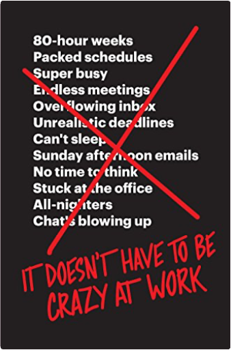

it doesn't have to be crazy at workjason fried, david heinemeier hansson In this timely manifesto, the authors of the New York Times bestseller Rework broadly reject the prevailing notion that long hours, aggressive hustle, and "whatever it takes" are required to run a successful business today.
In Rework, Jason Fried and David Heinemeier Hansson introduced a new path to working effectively. Now, they build on their message with a bold, iconoclastic strategy for creating the ideal company culture—what they call "the calm company." Their approach directly attack the chaos, anxiety, and stress that plagues millions of workplaces and hampers billions of workers every day.
Long hours, an excessive workload, and a lack of sleep have become a badge of honor for modern professionals. But it should be a mark of stupidity, the authors argue. Sadly, this isn’t just a problem for large organizations—individuals, contractors, and solopreneurs are burning themselves out the same way. The answer to better productivity isn’t more hours—it’s less waste and fewer things that induce distraction and persistent stress.
It’s time to stop celebrating Crazy, and start celebrating Calm, Fried and Hansson assert.
Fried and Hansson have the proof to back up their argument. "Calm" has been the cornerstone of their company’s culture since Basecamp began twenty years ago. Destined to become the management guide for the next generation, It Doesn't Have to Be Crazy at Work is a practical and inspiring distillation of their insights and experiences. It isn’t a book telling you what to do. It’s a book showing you what they’ve done—and how any manager or executive no matter the industry or size of the company, can do it too. the checklist manifesto: how to get things rightatul gawande In his latest bestseller, Atul Gawande shows what the simple idea of the checklist reveals about the complexity of our lives and how we can deal with it.
The modern world has given us stupendous know-how. Yet avoidable failures continue to plague us in health care, government, the law, the financial industry—in almost every realm of organized activity. And the reason is simple: the volume and complexity of knowledge today has exceeded our ability as individuals to properly deliver it to people—consistently, correctly, safely. We train longer, specialize more, use ever-advancing technologies, and still we fail. Atul Gawande makes a compelling argument that we can do better, using the simplest of methods: the checklist. In riveting stories, he reveals what checklists can do, what they can’t, and how they could bring about striking improvements in a variety of fields, from medicine and disaster recovery to professions and businesses of all kinds. And the insights are making a difference. Already, a simple surgical checklist from the World Health Organization designed by following the ideas described here has been adopted in more than twenty countries as a standard for care and has been heralded as “the biggest clinical invention in thirty years” (The Independent). high output managementandrew s. grove In this legendary business book and Silicon Valley staple, the former chairman and CEO (and employee number three) of Intel shares his perspective on how to build and run a company.
The essential skill of creating and maintaining new businesses—the art of the entrepreneur—can be summed up in a single word: managing. Born of Grove’s experiences at one of America’s leading technology companies, High Output Management is equally appropriate for sales managers, accountants, consultants, and teachers, as well as CEOs and startup founders. Grove covers techniques for creating highly productive teams, demonstrating methods of motivation that lead to peak performance—throughout, High Output Management is a practical handbook for navigating real-life business scenarios and a powerful management manifesto with the ability to revolutionize the way we work. |
 le réveil du samouraï : culture et stratégie japonaises dans la société de la connaissancepierre fayard
le réveil du samouraï : culture et stratégie japonaises dans la société de la connaissancepierre fayard 
 the 4-hour body: an uncommon guide to rapid fat-loss, incredible sex, and becoming superhumantimothy ferriss
the 4-hour body: an uncommon guide to rapid fat-loss, incredible sex, and becoming superhumantimothy ferriss 
 Made with Delicious Library
Made with Delicious Library